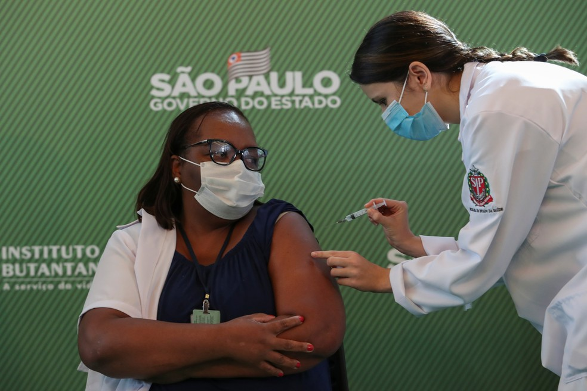

Vacinação Covid-19 Brasil
Levantamento junto a secretarias de Saúde aponta que 71.369.215 pessoas tomaram a primeira dose e 25.344.765 a segunda, 247.506 a dose única, num total de mais de 96,9 milhões de doses aplicadas, segundo dados do consórcio de veículos de imprensa que divulga diariamente os dados de imunização no país.
Os brasileiros que estão totalmente imunizados, ou seja, que tomaram as duas doses de vacinas contra a Covid ou a dose única, são 12,09% da população do país. São 25.344.765 imunizantes aplicados na segunda dose mais 247.506 na dose única, segundo dados do consórcio de veículos de imprensa, divulgado às 20h desta segunda-feira (28). O total é de 25.592.271 doses aplicadas.
